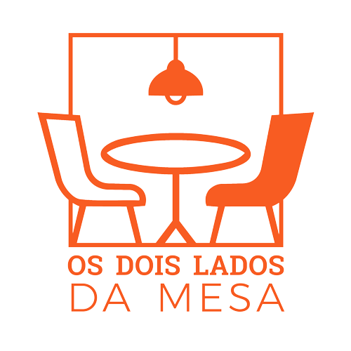

Conversas que conectamParticipe do podcast que conecta quem busca oportunidades com quem contrata — com conversas reais, sem roteiro e cheias de impacto.
Um podcast que explora o mercado de trabalho sob duas perspectivas: quem busca oportunidades e quem contrata. Conversas leves, reais e práticas sobre decisões profissionais, cultura organizacional e ambientes de trabalho mais saudáveis.
Aqui, o foco não é teoria, é realidade.
Ajudar pessoas e empresas a se entenderem melhor, tomando decisões mais conscientes no ambiente de trabalho.
Sem roteiro engessado. O host conduz a conversa. Você compartilha sua visão.
Duração ideal, conteúdo direto e envolvente.
Conversa leve, clima de troca real.
Entrevista autêntica, sem filtros.
Você não precisa “performar”, só compartilhar sua experiência. O host cuida de tudo.
Conteúdo relevante
Impacto real no público
Cortes editados
Para Instagram, TikTok e YouTube
Marcação + divulgação
Em todas as redes do podcast
Posicionamento
Referência no seu tema
Distribuição multiplataforma com cortes estratégicos para máximo engajamento.
Alcance qualificado + autoridade profissional expandida.
Enquanto muitos conteúdos entregam teoria, nós entregamos realidade. Conversas reais entre quem busca e quem contrata, sem filtros institucionais. Aqui, a conversa gera clareza e não entretenimento vazio.
Convidados reais, experiências transformadoras
“Foi uma das conversas mais autênticas que já tive sobre mercado de trabalho. Me senti à vontade e o resultado foi incrível.”
— Camila Torres
Head de Gente & Cultura
“Recomendo demais. Profissionalismo, leveza e um formato que realmente valoriza o convidado.”
— Rafael Mendes
Consultor de Carreira